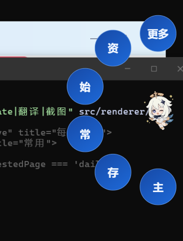
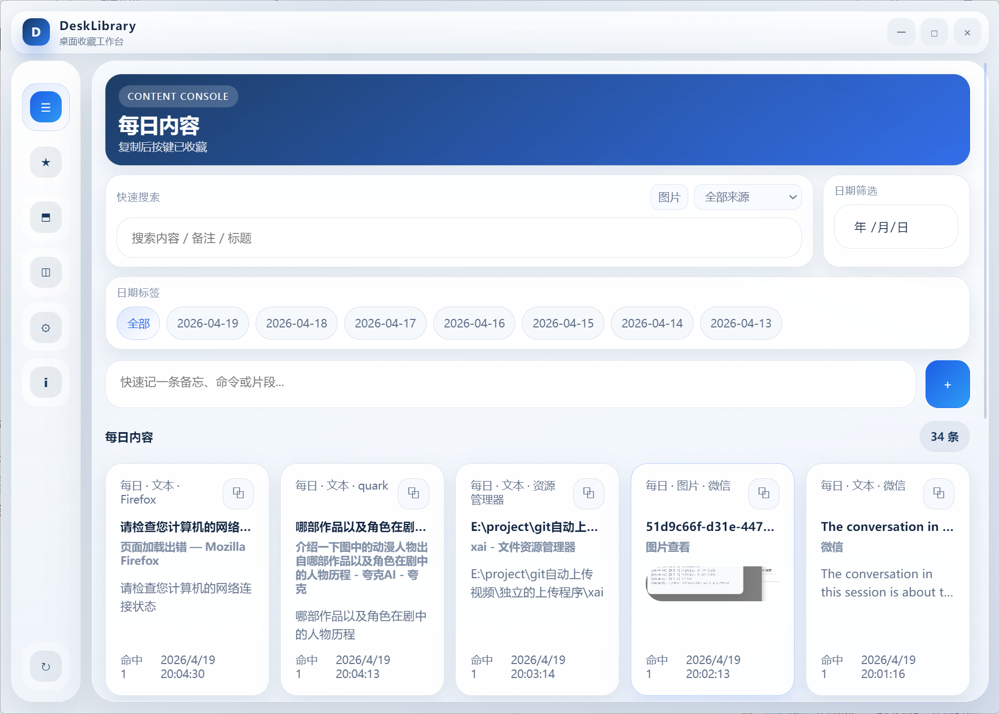
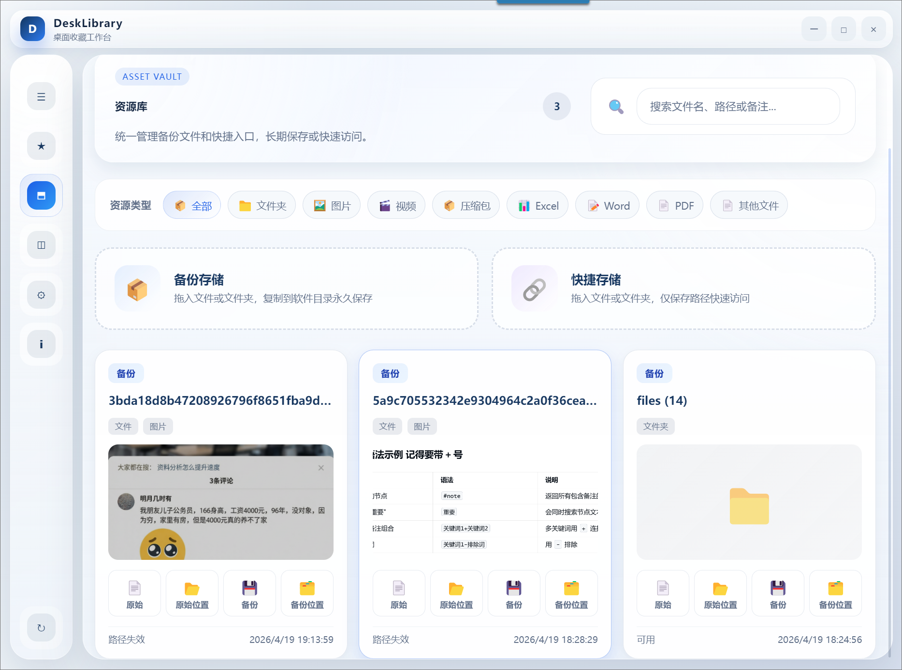
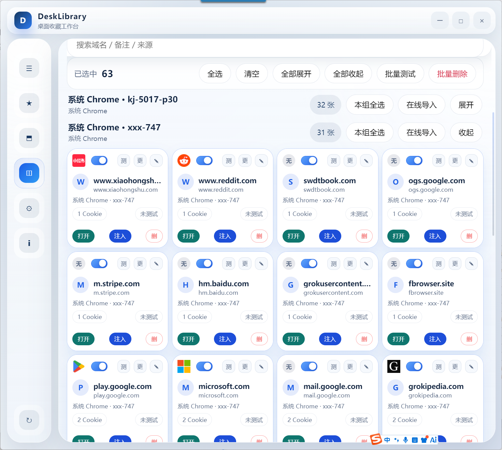

先解决办公里的真实问题
首个集便签、浏览器、文件夹、重要内容收藏与资源备份于一体的个人资源管理系统。
办公时最重要的不是收集更多工具，而是先提高效率。 把复制过的内容、常用文件、浏览器账号状态和桌面快捷入口集中起来， 才能少找、少翻、少重复操作。
剪贴板收藏
资源库
浏览器卡片
悬浮图标
截图 OCR / 翻译




把碎片内容收进一个入口
真实截图，而不是概念图
它具体解决什么问题
不再用左右对照解释，直接按场景拆成三类核心问题。
文案、链接、截图、回复模板、数据片段散落在聊天、网页、文档里，下次还得重新翻。
- 用剪贴板收藏沉淀文本和图片
- 支持搜索、筛选、常用归档
- 支持连续复制内容自动合并
模板、素材、项目目录、下载文件夹分散在各个路径里，路径越多，日常打开越慢。
- 用资源库统一管理文件和文件夹
- 支持备份模式和快捷模式
- 支持备注、分类、快速打开
多个浏览器、多套账号、多种登录状态同时存在，切换和维护都很费时间。
- 用浏览器卡片管理 Cookie 状态
- 支持导入、刷新、注入
- 适合电商、运营、测试、多账号办公
核心功能，不止三个模块
三个核心能力之外，还把真正高频的桌面辅助动作接进来了。
核心工作台
DeskLibrary 的重点不是做“一个剪贴板工具”或“一个文件收藏夹”，而是把个人办公资源统一进一个可复用的工作台。
📋
剪贴板收藏
文本 / 图片自动收藏，支持搜索、筛选、常用沉淀。
📦
资源库
文件 / 文件夹统一收纳，支持备份模式和快捷模式。
🌐
浏览器卡片
Cookie 卡片化管理，支持导入、刷新、注入。
不需要始终打开主界面，常用操作从桌面边缘直接呼出。
适合快速提取图片文字，处理临时性的识别和理解任务。
工具始终留在桌面工作流里，而不是开一次就丢失入口。
为什么值得用
核心不只是功能多，而是这些功能都和个人办公效率直接相关，而且免费开源。
一个能长期沉淀你个人资源的免费开源工作台
很多工具只能处理一个局部问题，比如只管剪贴板、只管文件、只管浏览器。DeskLibrary 把这些高频需求合在一起，而且代码开放、可持续扩展，不会把你的工作流锁死在封闭产品里。
免费开源
Windows 桌面工具
支持自定义扩展和二次开发
真实面向办公效率场景
适合谁用
如果你每天都在复制资料、整理文件、切账号、找入口，这页说的就是你。